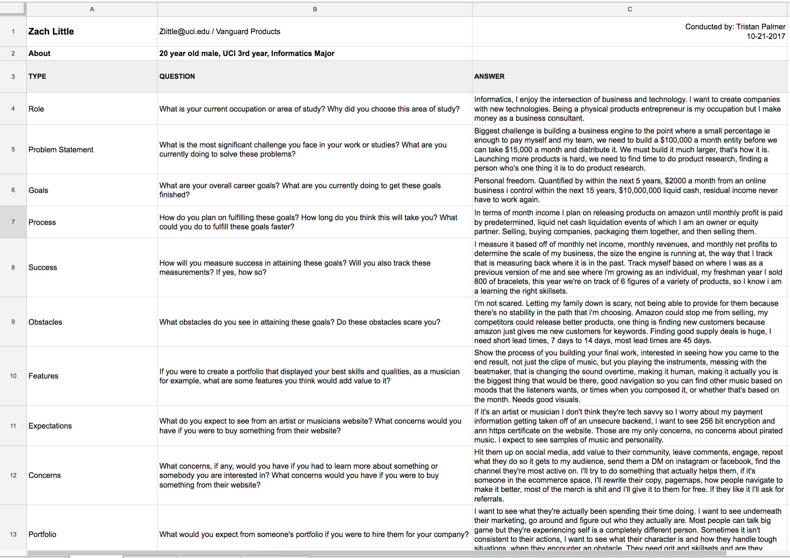
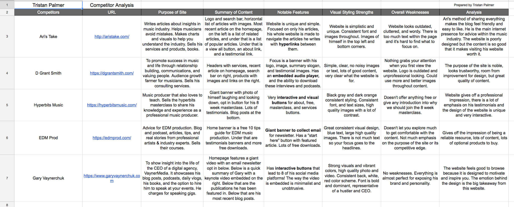
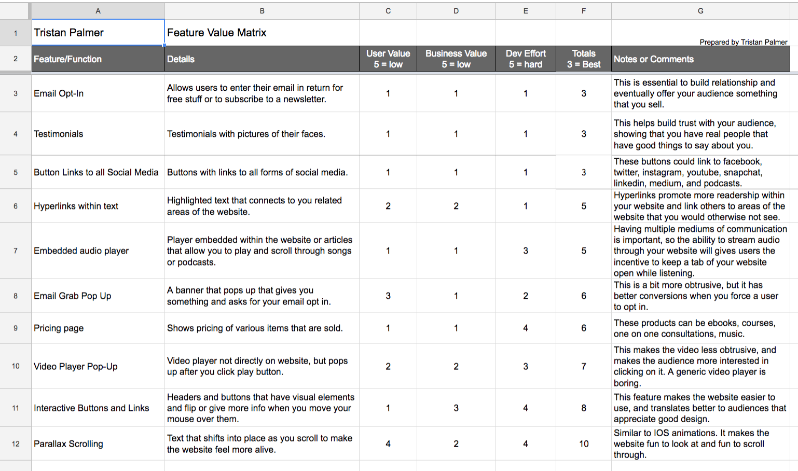
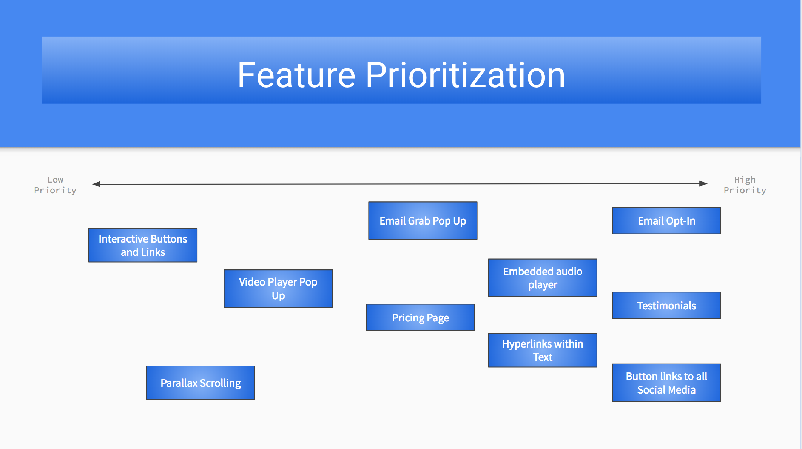
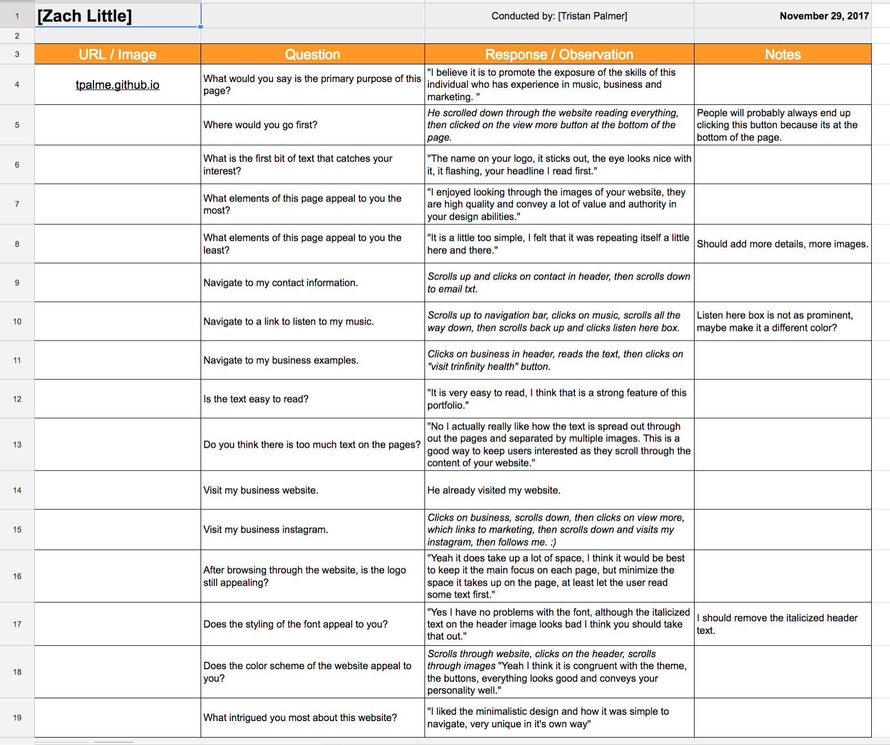
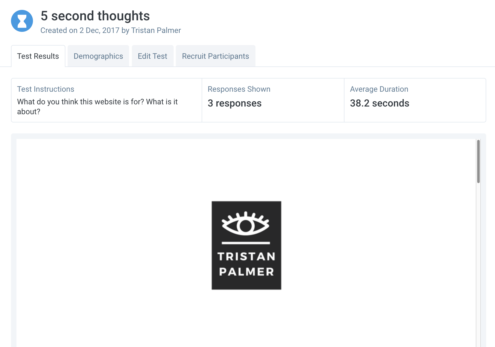

Summary of Findings
View My WorkUser Research
User Interviews
The user interviews helped me get an understanding of what my visitors would want from my portfolio website. I asked questions that would give me an idea about what their interests are, and what they would need from someone like me.
Competitor Analysis
In my competitor analysis, I looked at the personal websites of people that run their business around themselves, something that I also strive to do. Most of these websites were based around music marketing.
Feature Value Matrix
My feature value matrix allowed me to realize that my features that I desire are not actually the most important. What I realized mattered most is content and how it is displayed.
Feature Prioritization
I enjoyed creating this feature prioritization, from it I decided to link my websites associated with my business.
User Testing
User StoriesWhen creating the user stories it made me think about possible scenarios that I would not have prepared for otherwise, these helped me better understand how my audience would react to my website.
View MoreCognitive Walkthrough
The cognitive walkthroughs were fun and helped me get in person advice about my website. When watching users go through my website I realized I had too much content and should narrow it down.
View MoreUser Test
For my user tests, I did a 5 second test that asked users what they thought the website was about. The answers were surprisingly good. I also did a click test that asked them to navigate to my music, I realized that people would click on the menu button first, and then scroll down and click on the desired button.
View MoreSummary of Findings
These findings allowed me to widen my perspective on what users want when looking at a portfolio website. Sometimes you can get caught up in making the website easy to use for yourself but when you put your website in front of the users you want to target you will quickly realize that they want things different.
The main realization I had was that I had too many words in my portfolio. Sometimes I get carried away with the amount of words to choose to include, and this can add unneccesary fluff. Another thing I had to get rid of were the large sizing of pictures, at first the pictures took up the whole page and while I felt that it made my website feel different, others found it a hassle to navigate through.
Finally, these findings have allowed me to realize what I need to add to my portfolio if I want it to be beneficial in the long run. People asked about my resume, whether I had more projects, and more descriptions of the skills I had.
View MoreIncorporation of Findings
I plan to incorporate many things that I learned from these findings. The main thing lacking from my portfolio was that I did not include my resume and a better description of the skills that I have. I will do this in the future as I continue to build my resume and use this website in a more benefitial way. This website was meant to just give a feeling for what I like to do, what I enjoy doing, and was not focused on being a portfolio to send recruitesr.
One thing that people looked for was an easy way to listen to my music. One user mentioned that I needed embedded players in my website to help make it easier to listen to my music. I agree with this, I hate going to another website when asked to do something like listen to music.
View More